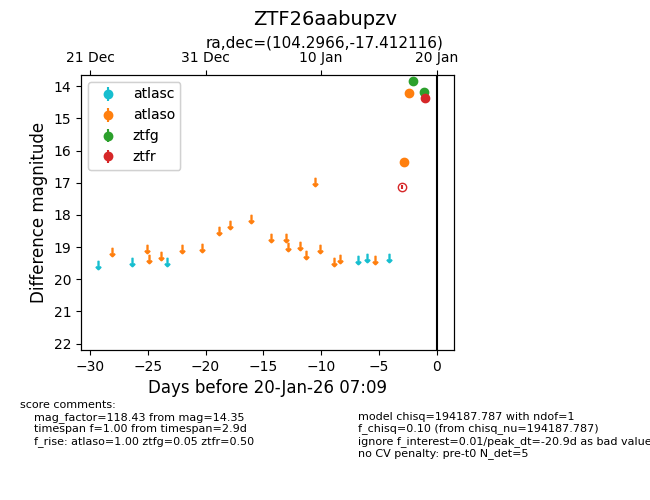
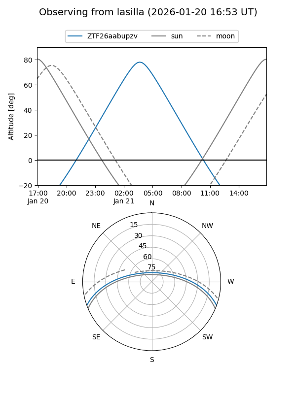
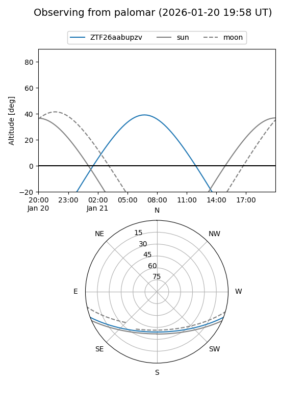
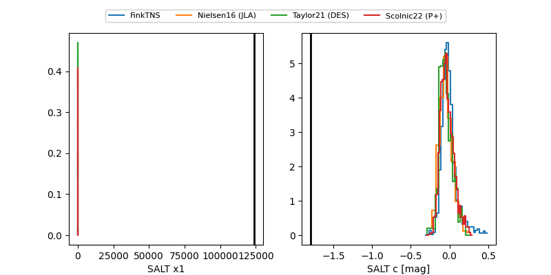

ZTF26aabupzv
Target ZTF26aabupzv at 2026-01-19 07:35
Aliases and brokers:
FINK: link
Lasair: link
ALeRCE: link
alt names
ZTF26aabupzv (ztf,fink_ztf)
Coordinates:
equatorial (ra, dec) = 104.2966,-17.41212
equatorial (HMS+DMS) = 06:57:11.18,-17:24:43.62
galactic (l, b) = (229.1379,-6.61240)
Flags:
likely cv
Photometry:
last atlaso=14.21, ztfg=14.18, ztfr=14.35
2 atlaso, 2 ztfg, 1 ztfr detections
Lightcurve

Visibility


Additional plots
